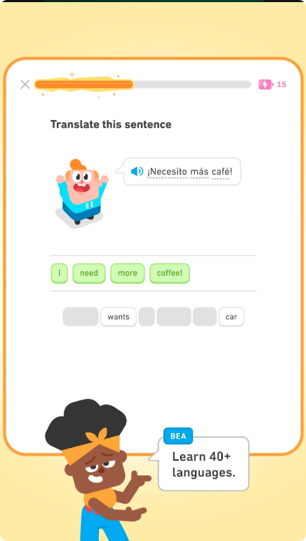
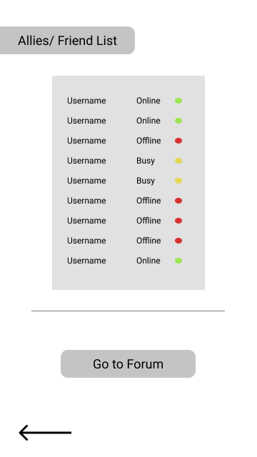
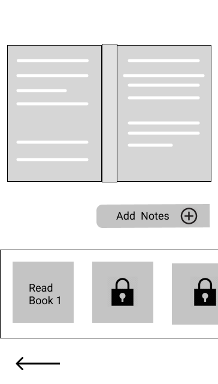
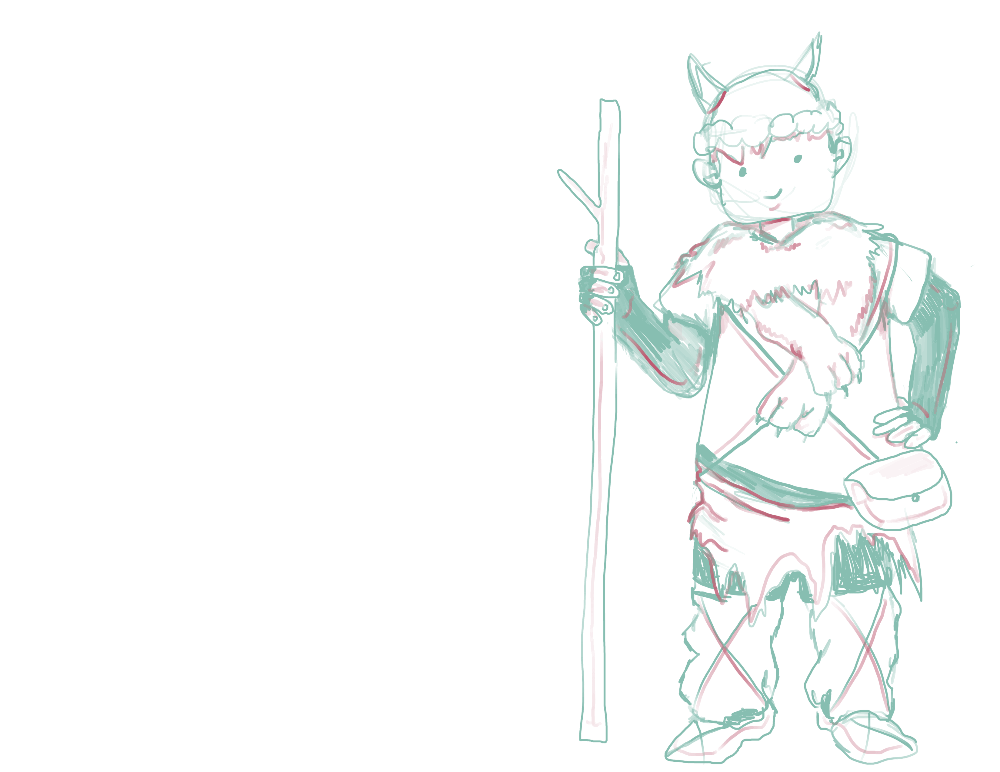

Problem
The idea for Jargon was inspired by my hometown in South Florida. 21% of the Floridian population is comprised of immigrants, specifically immigrants that hail from a non-English speaking country. Hispanics (more specifically, Cubans.) make up the largest minority group, followed closely by Haitians. But although they make up a large portion of Florida's population, only 35% of Cuban immigrants reported having an adequate level of English proficiency. The lack of English proficiency severely limits job opportunities and social interactions with other communities in the population.
Challenges faced
- Adhere to mobile game guidelines while making the mobile version of the app, such as appropriate interactions when scaling down and responsive design.
- Design the app in a way that's educational, but fun for the user to partake in (as well as motivate the user to keep learning.)
- Make Jargon stand out from the competitors (what would make it preferable for a user to pick Jargon as a language-learning platform over more recognizable apps such as Duolingo a direct competitor given how its gamified approach) or Rosetta Stone?
Timeline
November 2021-January 2022
This was a project for a Google certificate program.
Therefore, this was only a design project and never shipped out.
Solution
Create a responsive application that helps users continue to learn English while they are away from the classroom. (Ideally, the app would work in tandem with some form of traditional education.) Design the app as a video game with a focus on social engagement and make the video game inspired app beginner-friendly by implementing tutorials as well as with a language-synced interface (as in, the interface will reflect the native language of the user.)
1. Research
A competitive audit was conducted using a variety of products, both indirect and direct competitors. Since the goal of Jargon is to make a learning, gamified app, other mobile games with similar formats were researched- even when these other games were for pleasure only.

Life in Adventure, a non-educational, medieval RPG (with scenario elements akin to Crusader Kings) and Duolingo contained most of the features sought out by users. These two apps would provide the principles which Jargon follows: Accessibility and Entertainment.


The study called for a focus on young adults, ranging from 18-24 years of age. Thirteen participants contributed to a survey, set up through Google Forms. Out of the thirteen participants, ten reported past or present use of language learning apps, the majority using Duolingo.


The answers of those participants who had never used a language learning app were still taken into account. This information was desirable, if not necessary, to know in order to determine user pain points and limitations of language learning apps. Quotes that follow the charts emphasis said limitations.
"They've helped to learn the basics or reinforced those I already had. But never both of them. I always need to rely on something else: a book, youtube videos, films, podcasts or radio.. etc."
"I found it not very useful because you could only learn separate words or everyday phrases, but no complex stuff. The progression was also very slow and there was no entry test possibilities back at the time."
"Wish it was more interactive."
And when asked the question of:
What would you like to see be improved in apps, educational programs, school, and workplaces when it comes to learning English?
Users responded:
"For it to be aimed more towards casual conversation so that people can acclimate better to other English speakers."
"The best way to improve language is still a teacher or partner."
"Words that have multiple meanings & “slang words” or contractions- ex.- y’all’d’ve."
User Personas were created from the amount of data collected from survey responses, interviews with two individuals who chose to provide emails, and reading scientific literature.


2. Pen to paper
Early ideas for the app were designed on paper, alongside notes jotted down for different parts of the proposed functionality. Notes and designs included screens and functionality such as for the intro, log in, sign up, home page, quest log functionalities and UI.
The idea was for users to play as Jargon, rather than themselves. Jargon would serve as the user's avatar and would gain knowledge of the world around him and the new language alongside the user. Jargon would have a backstory, one that would resonate especially with immigrants who have been forced to leave their home and families.


The next step after paper wires was to translate them to digital and create a very rough prototype for the first round of testing. Figma was used for both these efforts, though the first pass of this digitization was as simple as possible witth low fidelity mockups.





The first round of testing was a unmoderated usability study consisting of 6 participants. Each session per participant was about 30 minutes and was conducted remotely. These participants were peers from the same certificate class, with a few being the same individuals who had submitted answers in the previous survey.
Results were documented onto sticky notes using Mural and then further categorized. Each letter and sticky note color, as seen in the images below, represent an individual.
Then these results were summarized into three main areas of improvement:
- Customization
- Navigation
- More Content


3. Prototype
A breakdown can be seen of each screen in the application at a higher fidelity, which was constructed after the first round of testing. Given that this was a class project, it was done on a short timeframe and did not have as many testing rounds as a legitmate product would have. Still, a year later I revisted this project and decided to redesign some of the screens in order to give it a more modern overhaul.
Below are a few screens from the desktop version and the original screens for the mobile app with the notes alongside each set.


The prototype below shows the most updated version of the mobile app:

Reflections
As I look at this project now after four years of alot of change and experience, there is alot of things I would do differently. I was as green as a designer can be and made obvious, silly mistakes such as thinking hover could be possible in a mobile setting or making touchpoints much too small to be usable. The design and color scheme is definitely not the most appealing and I would definitely introduce different functionality, such as probably putting exploring more of the community aspect of the application.
But most importantly, I would have tried to do deeper, more hands on testing than just one survey and one round of feedback completely unmonitored. I was definitely much more shy at this point in my life and was definitely not keen at reaching out to others.
And yet with all that said, I look at all of this and I feel proud of my younger self. Sure its clunky and not the prettiest and I still have so much to learn, even 4 years later. But the love that I have always had for video games can be seen in this project and is still with me 4 years later.
Resources:
All of the art used in Jargon, such as the activity pages, map interface, and profile page, belongs to me. The animation used for the splash, log in, and settings page is not mine and acts as a placeholder until I can create one. Please check out Felipe Palacio's art here
Thank you for taking the time to read this case study!

Check out other projects:

Booz Allen Hamilton case studies
Ongoing enhancement of a proprietary case management software to improve the Appeals process for U.S Veterans